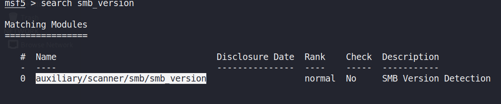

Run command to start Metasploit:
msfconsole
Modules:
1. Auxillary modules: Auxillary modules are pre-exploit. Scannin, enumeration, information gathering
2. Exploits
3. Post
smb_version

Things to find out:
1. Metasploit: How is it picked up? What happens when it is picked up?